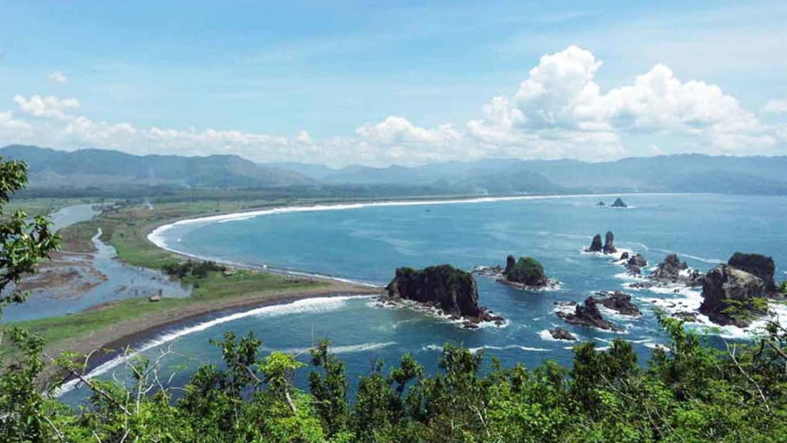

Sejarah
berdasarkan Staatsblad Nomor 322 tanggal 9 Agustus 1928, yang mulai berlaku tanggal 1 Januari 1929. Pemerintah Hindia Belanda telah mengeluarkan ketentuan tentang penataan kembali pemerintah desentralisasi di wilayah Provinsi Jawa Timur, antara lain dengan menunjuk Regenschap Djember sebagai masyarakat kesatuan hukum yang berdiri sendiri. Secara resmi ketentuan tersebut diterbitkan oleh Sekretaris Umum Pemerintah Hindia Belanda (De Aglemeene Secretaris) G.R. Erdbrink, 21 Agustus 1928.
Pemerintah Regenschap Jember yang semula terbagi dalam tujuh Wilayah Distrik, pada tanggal 1 Januari 1929 sejak berlakunya Staatsblad No. 46/1941 tanggal 1 Maret 1941 Wilayah Distrik dipecah menjadi 25 Onderdistrik, yaitu:
- Distrik Jember, meliputi onderdistrik Jember, Wirolegi, dan Arjasa.
- Distrik Kalisat, meliputi onderdistrik Kalisat, Ledokombo, Sumberjambe, dan Sukowono.
- Distrik Rambipuji, meliputi onderdistrik Rambipuji, Panti, Mangli, dan Jenggawah
- Distrik Mayang, meliputi onderdistrik Mayang, Silo, Mumbulsari, dan Tempurejo.
- Distrik Tanggul meliputi onderdistrik Tanggul, Sumberbaru, dan Bangsalsari.
- Distrik Puger, meliputi onderdistrik Puger, Kencong Gumukmas, dan Umbulsari.
- Distrik Wuluhan, meliputi onderdistrik Wuluhan, Ambulu, dan Balung.
Berdasarkan Undang Undang No. 12/1950 tentang Pemerintah Daerah Kabupaten di Jawa Timur, ditetapkan pembentukan Daerah-daerah Kabupaten dalam lingkungan Provinsi Jawa Timur (dengan Perda), antara lain Daerah Kabupaten Jember ditetapkan menjadi Kabupaten Jember.
Bersamaan dengan pembentukan Kota Administratif Jember, wilayah Kewedanan Jember bergeser pula dari Jember ke Arjasa dengan wilayah kerja meliputi Arjasa, Pakusari, dan Sukowono yang sebelumnya masuk Distrik Kalisat. Dengan adanya perubahan-perubahan tersebut, pada perkembangan berikutnya, secara administratif Kabupaten Jember saat itu terbagi menjadi tujuh Wilayah Pembantu Bupati, satu wilayah Kota Administratif, dan 31 Kecamatan.
Geografis
Secara geografis Kabupaten Jember terletak pada posisi 6027’29” s/d 7014’35” Bujur Timur dan 7059’6” s/d 8033’56” Lintang Selatan berbentuk dataran ngarai yang subur pada bagian Tengah dan Selatan, dikelilingi pegunungan yang memanjang sepanjang batas Utara dan Timur serta Samudra Indonesia sepanjang batas Selatan dengan Pulau Nusa Barong yang merupakan satu-satunya pulau yang ada di wilayah Kabupaten Jember. Kabupaten Jember memiliki total luas wilayah sebesar 3.306,689 km2 dengan ketinggian antara 0–3.330 mdpl. Bagian selatan wilayah Kabupaten Jember adalah dataran rendah dengan titik terluarnya adalah Pulau Nusa Barong. Pada kawasan ini terdapat Taman Nasional Meru Betiri yang berbatasan dengan wilayah administratif Kabupaten Banyuwangi. Bagian barat laut (berbatasan dengan Kabupaten Probolinggo adalah pegunungan, bagian dari Pegunungan Iyang, dengan puncaknya Gunung Argopuro (3.088 m). Bagian timur merupakan bagian dari rangkaian Dataran Tinggi Ijen. Jember memiliki beberapa sungai antara lain Sungai Bedadung yang bersumber dari Pegunungan Iyang di bagian Tengah, Sungai Mayang yang persumber dari Pegunungan Raung di bagian timur, dan Sungai Bondoyudo yang bersumber dari Pegunungan Semeru di bagian barat.
Wisata
Tempat wisata di Jember menghadirkan berbagai macam tempat wisata yang sangat komplit. Wisata alam memang masih sangat mendominasi, namun bukan berarti Jember tidak memiliki wisata yang lainnya.
Pantai Payangan

Pantai ini terletak di Kecamatan Ambulu. Pesona pantai ini akan sangat indah jika dilihat dari atas bukit yang terletak di sekitar pantai. Selain dihiasi beberapa bukit, pantai ini juga dihiasi oleh bebatuan yang berbaris rapi di tepi pantai. Banyak wisatawan dari dalam maupun luar kota yang datang untuk berwisata. Sebagian besar dari mereka menginap atau datang pada tengah malam untuk dapat melihat sunrise dari atas bukit.
Pantai Watu Ulo

Pantai yang terletak sekitar 25 Km dari Kecamatan Ambulu dan pada saat hari-hari libur biasanya banyak anak-anak muda dan rombongan keluarga yang pergi kesana untuk berlibur, apalagi saat hari-hari besar dan hari raya. Mereka biasanya pergi ke sana bersama-sama dengan keluarga mereka masing-masing menggunakan angkutan umum atau kendaraan pribadi. Pantai Watu Ulo memiliki panorama yang mempesona menghadap lautan Indonesia dengan deretan batu karang menyerupai ular.
Pantai Papuma
Pantai dengan pesona pasir putihnya dan Wisata Sejarah berupa peninggalan Gua Jepang. Pantai ini dikenal juga dengan nama Pantai Pasir Putih Malikan. Dinamakan Papuma karena pantai ini berpasir putih dengan hamparan batu-batu yang bila diterjang ombak lalu saling terberai membalik.[15] Pantai Papuma adalah pantai yang sangat eksotik bila dibandingkan dengan pantai pantai yang ada di Jawa Timur, karena memiliki keindahan pantai dan laut yang menawan dengan pantai yang hijau kebiruan menjadikan tempat wisata ini banyak dikunjungi baik dari warga Jember sendiri juga dari kabupaten lain.